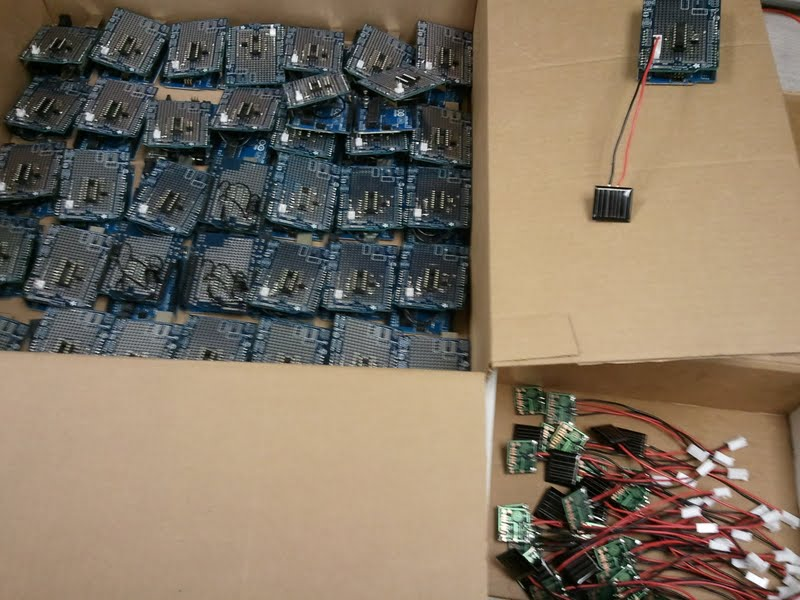
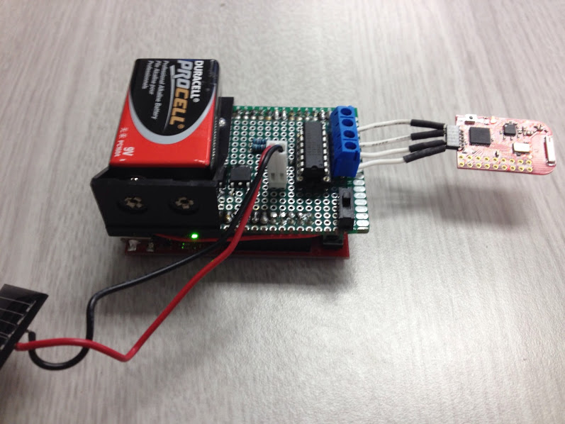
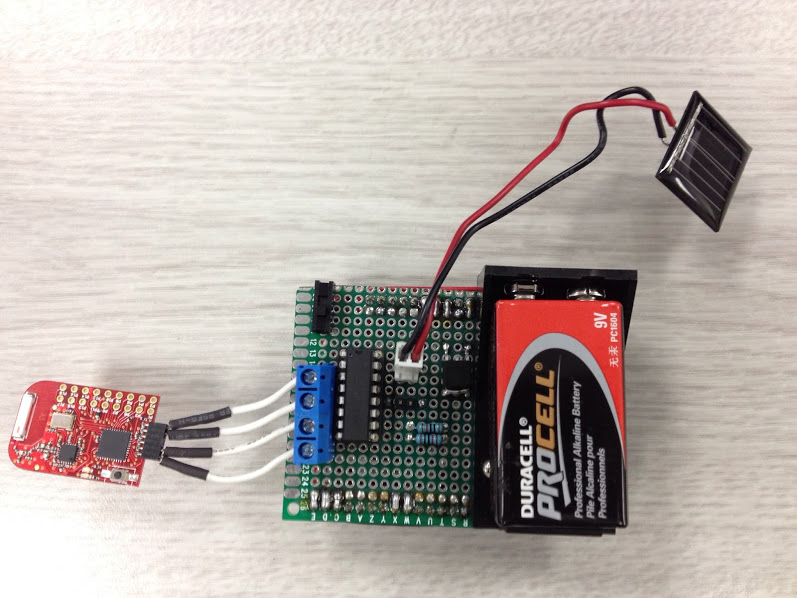
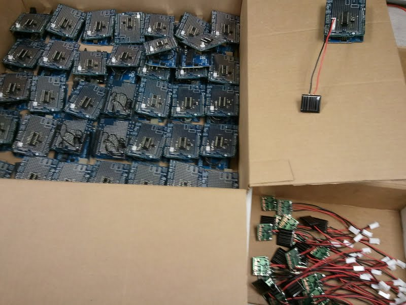
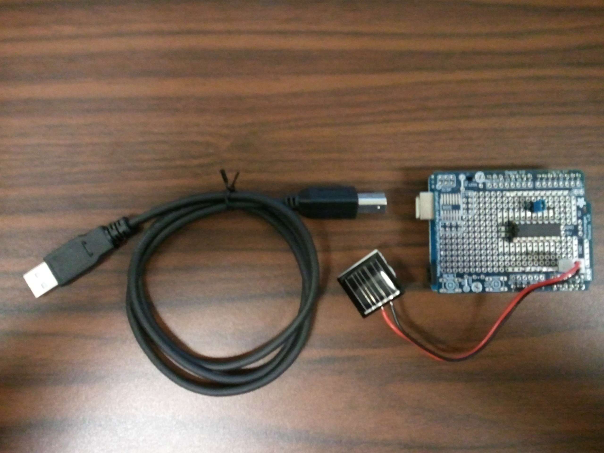
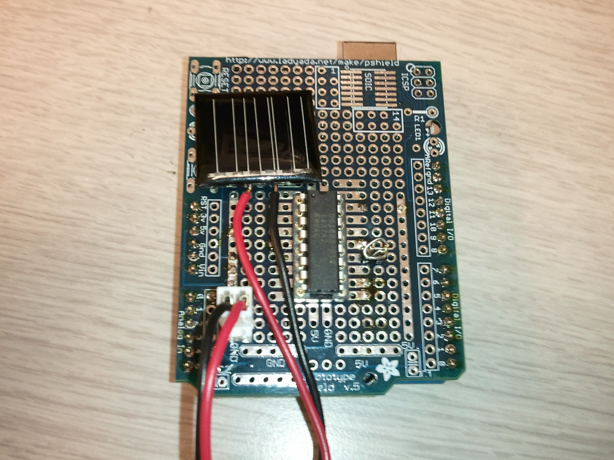
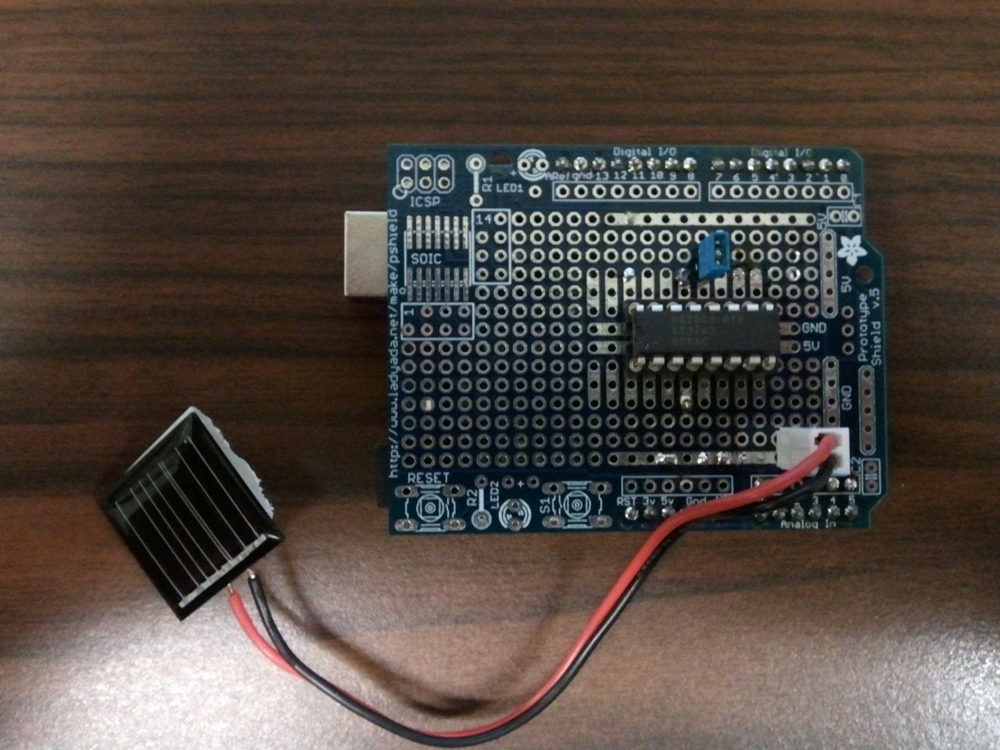

This page maintains the necessary documentation (hardware &
software) for recreating the Solar Hardware Module ("Solar Module")
using either Arduino UNO or TI Launchpad.
Prior to creating the solar module, we performed several experiments using a custom built solar panel fixture. For more information on the solar panel fixture, see link below. Solar Panel Fixture
Two versions of the solar module are built: Arduino-based and MSP430 Launchpad-based. Arduino UNO was selected for its wide community support and ease of hardware/software development. MSP430-based solution was
MSP430-based design was developed for its low power consumption and low cost. Hence the TI Launchpad was considered. In addition, MSP430-based wireless module was also available which made the Launchpad even more attractive due to uniformity in the hardware and the development environment.
The wireless sensor module is based on the Texas Instrument (TI) Launchpad and the Wireless Development Tool. Both boards are based on the MSP430 low power microcontroller and can be programmed using a single development tool. The wireless interface allows biderational communication between the sensor and the gateway/host computer. The sensor senses the output of a small solar cell on board. The small solar cell is connected to a load, which is emulated by a digital potentiometer. The voltage across the digital potentiometer is sampled and digitized by the internal ADC on the MSP430 on the Launchpad. Finally, the sample is then transmitted to the gateway via the wireless interface.
The wireless interface communicates with the host computer using the CC2500 chip, operating in the 2.4 GHz ISM band. The digital potentiometer (Maxim DS1803) is controlled by the MSP430 via the I2C interface. The entier sensor node is powered by a single 9V battery.
On the host computer, transmitted sensor data is received by the USB dongle (part of the TI Wireless Development Tool) and converted back to serial data. The USB port is emulating a serial terminal. The serial data is then read and processed by student-written MATLAB code.
Information on the Wireless Solar Module is below.
TI Wireless Development Tool -- information on the wireless interface hardware.
Schematic -- schematic for constructing the wireless sensor module.
Block Diagram -- block diagram for the wireless sensor module.
BOM -- bill of materials for the wireless sensor module.
Code for the Wireless Module.
MATLAB Class.

The hardware module consists of Arduino UNO board, small solar cell, and a digital potentiometer (load for the solar cell). The potentiometer is controlled by the Arduino through I2C.
The Arduino communicates with the host computer through a serial interface emulated on the USB port. The Arduino is also powered from the USB port and it runs the Arduino server code (adiosrv.ino). The server code is based on the code available here.
HOW TO build your own Arduino-based Solar Module:
Information on the Arduino Solar Module is below.
Build and Test Plan -- plan to build and test the 40 modules.
Bill of Materials -- BOM for building 40 Arduino Solar Modules.
Digital Potentiometer Datasheet -- Maxim DS1803. Caution!! the DS1803 cannot sustain large wiper current (must be < 1mA) produced by solar cell under bright sunlight! Must configure one potentiometer for limiting current!
AD5161 Digital Potentiometer Datasheet -- AD5161 is capable of sustaining 20mA of continuous wiper current, which is much better!
24 x 22mm Monocrystalline Solar Cell - SCC2422 (does not come with connectors)
Modified Arduino MATLAB class definition to interface w/DS1803. Added "pWrite" function
Sample MATLAB code to demonstrate a sweep using the hardware module.
Solution (.zip) to above lab.
Sample problems to prepare for the solar cell characterization lab.
Arduino IDE Software (download)
Arduino IO Package (download)
Arduino IO package: Slides and Examples

Prior to creating the solar module, we performed several experiments using a custom built solar panel fixture. For more information on the solar panel fixture, see link below. Solar Panel Fixture
Solar Module
A Solar Module hardware was designed to provide hands-on experience for beginning undergraduate engineering students. Hands-on experience includes programming hardware for data collection and sampling, and setting up and programming simple sensor networks for coopertive sensing. Finally, students learn statistical methods to analyze the collected data.Two versions of the solar module are built: Arduino-based and MSP430 Launchpad-based. Arduino UNO was selected for its wide community support and ease of hardware/software development. MSP430-based solution was
Solar Sensor Module - MSP430-based, Wireless (In Progress)
MSP430-based design was developed for its low power consumption and low cost. Hence the TI Launchpad was considered. In addition, MSP430-based wireless module was also available which made the Launchpad even more attractive due to uniformity in the hardware and the development environment.
The wireless sensor module is based on the Texas Instrument (TI) Launchpad and the Wireless Development Tool. Both boards are based on the MSP430 low power microcontroller and can be programmed using a single development tool. The wireless interface allows biderational communication between the sensor and the gateway/host computer. The sensor senses the output of a small solar cell on board. The small solar cell is connected to a load, which is emulated by a digital potentiometer. The voltage across the digital potentiometer is sampled and digitized by the internal ADC on the MSP430 on the Launchpad. Finally, the sample is then transmitted to the gateway via the wireless interface.
The wireless interface communicates with the host computer using the CC2500 chip, operating in the 2.4 GHz ISM band. The digital potentiometer (Maxim DS1803) is controlled by the MSP430 via the I2C interface. The entier sensor node is powered by a single 9V battery.
On the host computer, transmitted sensor data is received by the USB dongle (part of the TI Wireless Development Tool) and converted back to serial data. The USB port is emulating a serial terminal. The serial data is then read and processed by student-written MATLAB code.
Information on the Wireless Solar Module is below.
Hardware
TI MSP430 Launchpad -- information on the Launchpad.TI Wireless Development Tool -- information on the wireless interface hardware.
Schematic -- schematic for constructing the wireless sensor module.
{kind=link}
Block Diagram -- block diagram for the wireless sensor module.
{kind=link}
BOM -- bill of materials for the wireless sensor module.
Software
Programming using Energia software. Code for the Launchpad.Code for the Wireless Module.
MATLAB Class.
Picture of the MSP430 Wireless Solar Sensor
Launchpad is on the bottom. The board on the top is a custom daughter board/shield containing solar cell, digital potentiometer, 9V battery, and connection to wireless module.
Side view 1.
Side view 2.
Top view.
Solar Sensor Module - Arduino UNO-based (Completed)
An Arduino-based solar sensor module was built so students can obtain hands-on experience with controlling hardware, taking measurements from hardware, and perform analysis on measured data.The hardware module consists of Arduino UNO board, small solar cell, and a digital potentiometer (load for the solar cell). The potentiometer is controlled by the Arduino through I2C.
The Arduino communicates with the host computer through a serial interface emulated on the USB port. The Arduino is also powered from the USB port and it runs the Arduino server code (adiosrv.ino). The server code is based on the code available here.
HOW TO build your own Arduino-based Solar Module:
- Purchase an Arduino UNO shield protoboard, or cut a perforated board into the same dimension as the UNO.
- Insert the bare single-row headers onto both sides of the UNO. Place a perforated board into the UNO such that the single-row headers are inserted into the perforated board. Solder the single row headers into the perf. board. Cut the perf. board into the appropriate dimension. (You may also wish to subsititute the perf. board with the UNO shield proto. board)
- Solder the DS1803 potentiometer onto the perf. board.
- Solder the solar cell receptacle onto the perf. board.
- Solder the open circuit jumper onto the perf. board.
- Solder the appropriate connections to the DS1803 potentiometer. See connection diagram.
- Solder the appropriate connections (using short jumper wires) to the single-row header. Pins A4 and A5 are the two wire interface pins. Pin A0 is the ADC input which connects directly to one terminal of the solar cell receptable. The other end of the solar cell receptable connects to one terminal of the open circuit jumper.
- Build the solar cell by soldering lead wires to the solar cell and assembling the connector for the two lead wires.
- Program the Arduino UNO with the modified Arduino server.
- Download the modified Arduino MATLAB class and run the sample code (Make sure to check which COM port the UNO is using).
- You are done!
Information on the Arduino Solar Module is below.
Hardware
Connection Diagram -- connection diagram of the Arduino Solar Module.Build and Test Plan -- plan to build and test the 40 modules.
Bill of Materials -- BOM for building 40 Arduino Solar Modules.
Digital Potentiometer Datasheet -- Maxim DS1803. Caution!! the DS1803 cannot sustain large wiper current (must be < 1mA) produced by solar cell under bright sunlight! Must configure one potentiometer for limiting current!
AD5161 Digital Potentiometer Datasheet -- AD5161 is capable of sustaining 20mA of continuous wiper current, which is much better!
24 x 22mm Monocrystalline Solar Cell - SCC2422 (does not come with connectors)
Software
Modified Arduino server to interface with DS1803 through I2C. Modifications: code to setup WIRE interface, and cases 50, 60, and 70 in the switch statement.Modified Arduino MATLAB class definition to interface w/DS1803. Added "pWrite" function
Sample MATLAB code to demonstrate a sweep using the hardware module.
Getting Started
Lab exercise to get startedSolution (.zip) to above lab.
Sample problems to prepare for the solar cell characterization lab.
Links
Arduino UNO Page - contains hardware information on the moduleArduino IDE Software (download)
Arduino IO Package (download)
Arduino IO package: Slides and Examples

40 Arduino Solar Modules and Solar Cells with connectors built.
Arduino Solar Module With USB Cable.
Arduino Solar Module With Solar Cell and Digital Potentiometer.
Arduino Solar Module with Blue Jumper. The blue jumper disconnects the solar cell from the potentiometer.

This
work by S. Hsu, A. Knoesen and
R. Amirtharajah is licensed under a Creative
Commons Attribution-ShareAlike 4.0 International License.